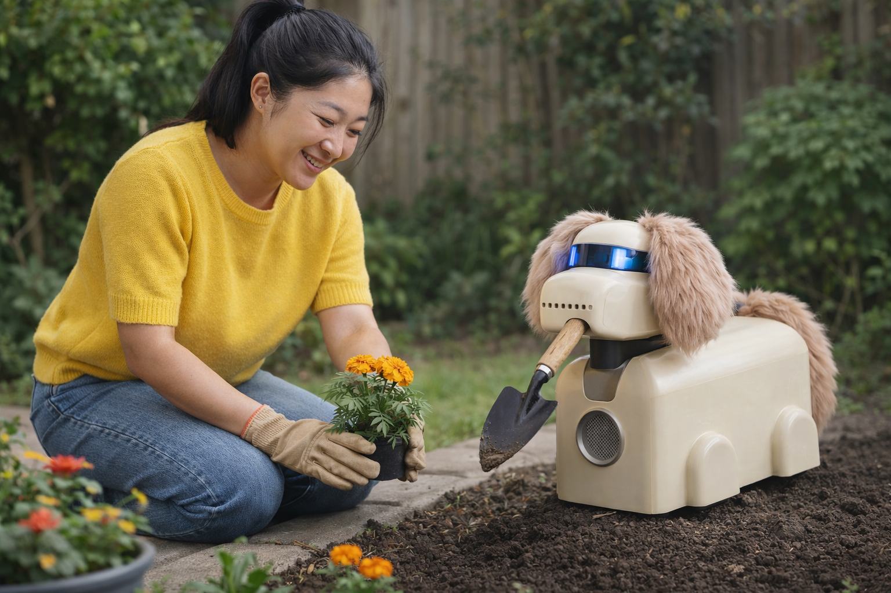
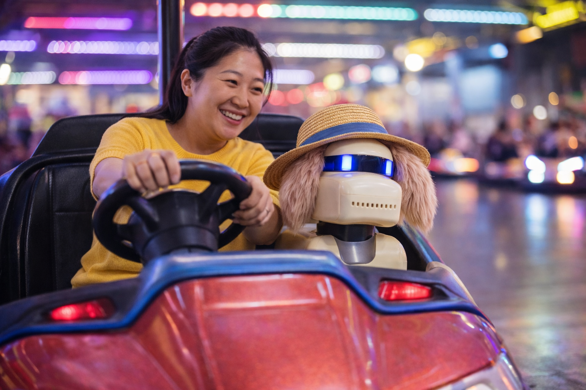

Roshelle Fong, Matthew Heffernan
Tags: DOG, Guidebot, Therapy, Spotlight, Mental Health
In the mid 2000s, Wing Lam left her family’s Tsuen Wan flat in bustling Hong Kong to study Engineering at RMIT. She lived with her late Aunt in Bulleke-bek, Brunswick; the same Edwardian bungalow she’d raise her daughter in as a single mother. “Since after Yi Ling was born, I realised I wasn’t okay…in fact, come to think of it, I don’t think I’d ever coped well on my own, not really”.
Wing Lam offhandedly shared her depression battle with a CSO, who suggested she join the Domestic O-series Guidebot trial. Wing Lam was far from convinced. “The bot thing didn’t put me off at all, quite the opposite! I studied robotics and mechatronics for Chrissake!” Wing Lam laughs. “It was more the shame around asking for help. It’s funny how we hold ourselves to different standards when it comes to admitting we’re struggling”.
Since completing the DOG trial in 2028 and signing up for a permanent in-home Guidebot, Wing Lam hasn’t looked back. “I’ve always been curious about human-robot relationships, but DOG exceeded my expectations. It’s fantastic with Yi Ling as a babysitter and mentor, and of course with me…not only as a sounding board, but as a genuine friend”.
Critics have expressed concern over DOG’s potential limitations as a government-run service, worried about customer privacy and increasing AI dependency. Whilst recognising DOGs may not be for everyone, Wing Lam maintains Guidebots themselves should not be blamed. “Who hasn’t been skeptical of therapy bots, and rightly so… the early-to-mid 20s was rife with AI innovation outpacing legal and ethical frameworks by miles,” she says. “And it’s important to stay critical and be in constant conversation about the impacts of our cybernetic relationships. But given the enormous psychosocial benefits I’ve gotten from DOG in under a year, all I can say is, don’t knock a DOG till you try it”.
Find out more about Domestic O-Series Guidebots, or signup for your own ‘good bot’ here.